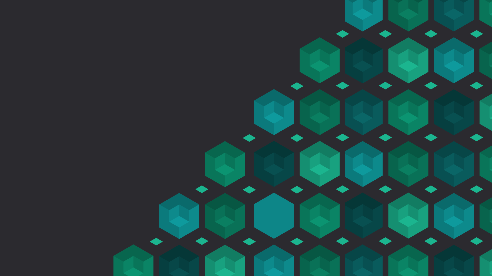
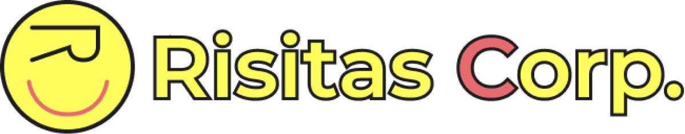
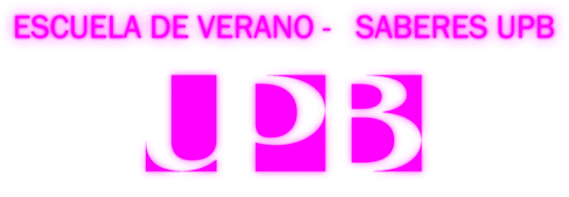
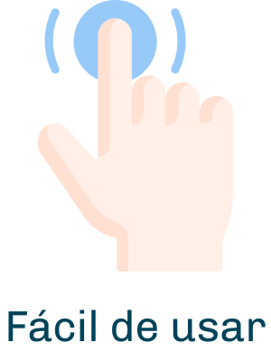
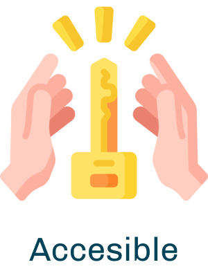
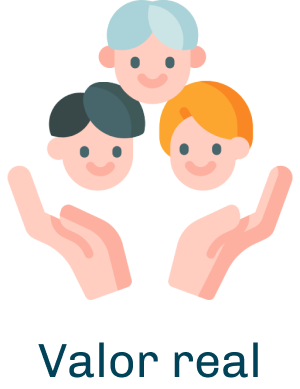
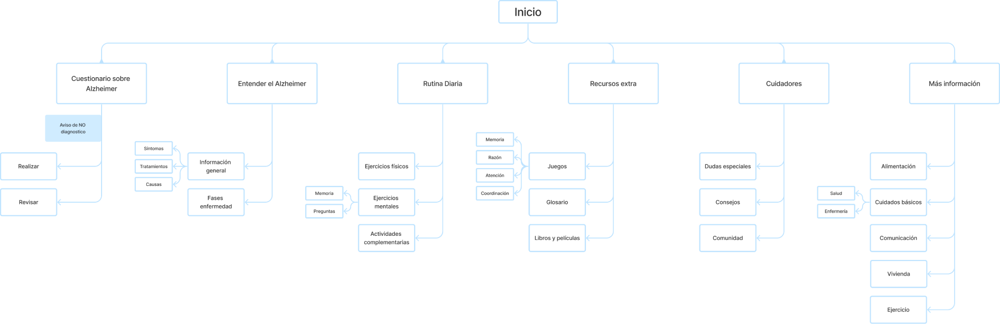
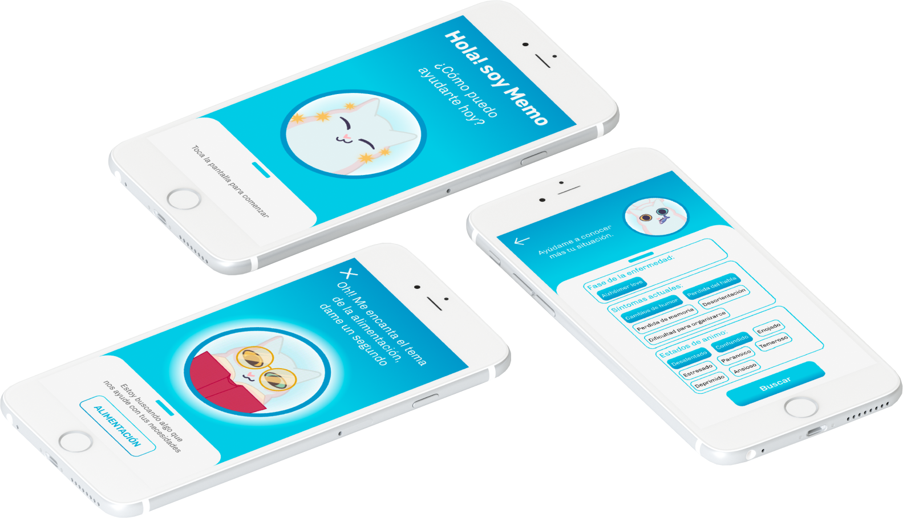

Todos nuestros conceptos de diseño tienen como objetivo dar alma a los interiores. Las personas deben poder sentir y experimentar los espacios.

Risitas Corp nace como una empresa ficticia que busca ayudar a los estudiantes con el estrés que les genera la “época de exámenes finales”. Utilizamos una narrativa absurda para distraer a los estudiantes, generando espacios de convivencia y aliviar el estrés en esos momentos difíciles.
Esta empresa es un conglomerado multinacional de empresas dedicadas a la energía, la logística, la investigación social y científica. Y en su mundo todas las leyes son completamente diferente a las propias, por ende hemos creado un nuevo proyecto de realidad virtual que busca ayudar con el estrés que generan los exámenes universitarios.

La experiencia principal de la escuela de verano Saberes UPB giró en torno al tema 'Metaverso, realidad virtual, blockchain, tokens y NFT', destacando cómo estas tecnologías están transformando el futuro.
Una de las actividades más innovadoras fue un ciclismo inmersivo en el metaverso, en colaboración con Rigoberto Urán, Go Rigo Go y Landian. Esta experiencia eliminó barreras entre lo humano y lo tecnológico, mi reto fue adecuar los elementos físicos en la experiencia y virtualmente configurar los menús y carreras en la inmersión VR.




La información que está dispersa en diferentes fuentes y puede ser abrumadora y confusa, genero una extensa investigación y análisis en el campo de la enfermedad. Con la que finalmente logramos comprender una parte de la enfermedad y a nuestro usuario, buscando así la mejor forma de ayudarles.
Descubrimos que muchas personas se enfrentan a una curva de aprendizaje pronunciada cuando se trata de comprender el Alzheimer y brindar el cuidado adecuado. Queríamos cambiar eso y hacer que la información y el apoyo estuvieran al alcance de todos, de manera clara y comprensible.
